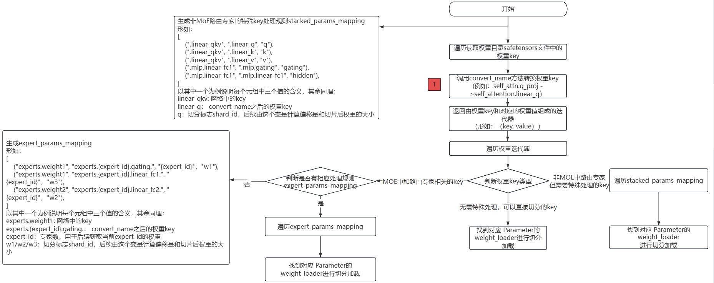

已废弃（Deprecated）
本页属于 静态图（GRAPH_MODE）实现 章节，已标记为废弃。新特性优先在「r2.0.0 动态图实现」章节演进，请优先查阅动态图相关文档。
权重转换开发适配

本文档将指导开发者在开发适配模型时，如何将新模型适配MindSpore Transformers的权重转换功能，让使用者能够通过MindSpore Transformers统一的自动转换流程，将新模型的Hugging Face权重转换成MindSpore Transformers的权重，以拉起推理流程。
Mcore模型网络加载Hugging Face权重流程图

上述流程图描述了将Hugging Face格式的.safetensors权重文件加载到Mcore模型中的完整权重转换与加载流程。
主要分为以下几个步骤：
读取所有
.safetensors文件，获取每个权重的key名称；调用
convert_name方法转换权重 key。这步也是权重转换开发必须适配的一步，同时返回权重key和对应的权重值；遍历权重
key和对应的权重值，判断权重key类型：不属于
MoE或特殊结构的key，可直接用weight_loader加载；MoE中和路由专家相关的key，生成相应处理规则expert_params_mapping，遍历expert_params_mapping，匹配名称，最终调用相应的weight_loader处理；非
MoE路由专家但需特殊处理的key，需要生成相应处理规则stacked_params_mapping，遍历stacked_params_mapping，匹配名称，最终调用相应的weight_loader处理。
开发步骤
根据上述流程图可以看出，权重转换适配只需要完成一项修改：调用convert_name方法，完成Hugging Face权重key至中间态key的转换。
操作步骤如下：
在模型实现目录下创建utils.py公共工具文件，用于封装模型基类的通用功能方法。
在utils.py中创建类：
类命名采用[ModelName]PreTrainedModel格式
继承PreTrainedModel和ModelMixin基类
定义类属性config_class和base_model_prefix：
config_class：指定为对应模型的Config类
base_model_prefix：设置为模型名称字符串标识
实现调用convert_name()方法需实现的key值映射表weight_mapping：
weight_mapping示例如下：
weight_mapping = [ ('model.embed_tokens.', 'embedding.word_embeddings.'), ('.self_attn.q_proj.', '.self_attention.linear_q.'), ('.self_attn.k_proj.', '.self_attention.linear_k.'), ('.self_attn.v_proj.', '.self_attention.linear_v.'), ('.self_attn.o_proj.', '.self_attention.linear_proj.'), ('.mlp.gate_proj.', '.mlp.gating.'), ('.mlp.down_proj.', '.mlp.linear_fc2.'), ('.mlp.up_proj.', '.mlp.hidden.'), ('.post_attention_layernorm.', '.pre_mlp_layernorm.'), ('model.norm.', 'decoder.final_layernorm.'), ('lm_head.', 'output_layer.'), ('model.layers.', 'decoder.layers.') ]
其中，元组的第一个元素为Hugging Face权重key，第二个元素为中间态权重key。
Qwen3模型权重转换适配样例
在models/qwen3目录下新建utils.py文件，具体可参考utils.py。
Qwen3PreTrainedModel部分代码如下：
class Qwen3PreTrainedModel(PreTrainedModel, ModelMixin):
config_class = Qwen3Config
base_model_prefix = "Qwen3"
weight_mapping = [
('model.embed_tokens.', 'embedding.word_embeddings.'),
('.self_attn.q_proj.', '.self_attention.linear_q.'),
('.self_attn.k_proj.', '.self_attention.linear_k.'),
('.self_attn.v_proj.', '.self_attention.linear_v.'),
('.self_attn.o_proj.', '.self_attention.linear_proj.'),
('.self_attn.q_norm.', '.self_attention.q_layernorm.'),
('.self_attn.k_norm.', '.self_attention.k_layernorm.'),
('.mlp.gate_proj.', '.mlp.gating.'),
('.mlp.down_proj.', '.mlp.linear_fc2.'),
('.mlp.up_proj.', '.mlp.hidden.'),
('.post_attention_layernorm.', '.pre_mlp_layernorm.'),
('model.norm.', 'decoder.final_layernorm.'),
('lm_head.', 'output_layer.'),
('model.layers.', 'decoder.layers.')
]
验证权重加载是否成功
参考推理文档执行推理流程，然后查看日志。如果日志中出现以下内容，表明权重和网络完全匹配，权重已经完全加入到网络中。检验模型推理结果是否符合预期，若出现乱码情况，需要进一步定位，参考推理精度比对文档：
These parameters are not loaded in the network: {}